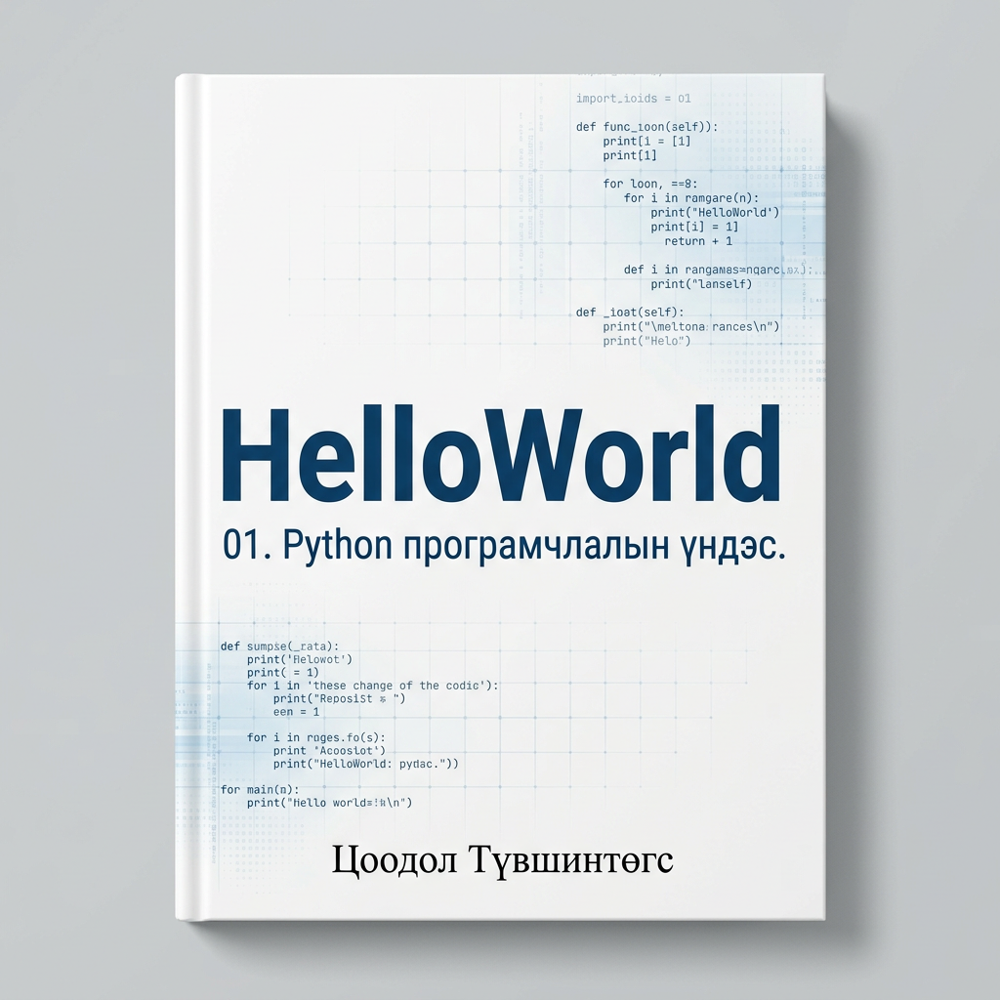

HelloWorld, 01. Python програмчлалын үндэс нь өмнө нь огт програмчилж байгаагүй анхлан суралцагчид, мөн програмчлал сурахыг оролдсон боловч хүндрэлтэй тулгарч байсан хүмүүст зориулсан Python програмчлалын удиртгал ном юм..
Энэхүү номын бүлэг бүр өмнөх бүлгүүдэд эзэмшсэн мэдлэг, ойлголтод тулгуурлан боловсруулагдсан. Иймээс бүлгүүдийг өгөгдсөн дарааллаар нь судалж, дараагийн бүлэгт шилжихээсээ өмнө тухайн бүлгийн дасгал, даалгавруудыг гүйцэтгэж, сурсан мэдлэгээ бататгахыг зөвлөж байна.
Эхний зургаан бүлэгт арифметик үйлдэл, нөхцөлт илэрхийлэл, давталт зэрэг програмчлалын үндсэн элементүүдийг танилцуулна. Мөн програмчлалын хамгийн чухал ойлголтуудын нэг болох функц (function) болон функцийг үр дүнтэй ашиглах хүчирхэг арга болох рекурс (recursion)-ийн талаар авч үзнэ.
7 болон 8 дугаар бүлэгт үсэг, үг, өгүүлбэр зэрэг текстэн мэдээллийг илэрхийлэхэд ашигладаг тэмдэгт мөр (string) өгөгдлийн төрөл болон тэмдэгт мөртэй ажиллах алгоритмуудыг судална.
9–12 дугаар бүлэгт Python хэлний өгөгдлийн үндсэн бүтцүүд болох жагсаалт (list), толь (dictionary), кортеж (tuple)-ийг танилцуулна. Эдгээр нь үр ашигтай, оновчтой програм боловсруулахад өргөн ашиглагддаг чухал хэрэгслүүд юм.
Тухайлбал, 12 дугаар бүлэгт текстэн мэдээлэлд дүн шинжилгээ хийх болон санамсаргүй байдлаар шинэ текст үүсгэх алгоритмуудыг авч үзнэ. Эдгээртэй төстэй алгоритмын зарчмууд нь том хэлний загваруудын (Large Language Models — LLMs) үндэс суурийн нэг хэсэг болдог. Иймээс энэ бүлгийг судалснаар ChatGPT зэрэг хиймэл оюун ухаанд суурилсан хэрэгслүүд хэрхэн ажилладаг талаар анхан шатны ойлголттой болно. 13 дугаар бүлэгт өгөгдлийг урт хугацаанд хадгалах аргууд, тухайлбал файл (file) болон өгөгдлийн сан (database)-тай ажиллах үндсэн ойлголтуудыг судална. Энэ бүлгийн практик дасгалын хүрээнд файлын системээс хайлт хийж, давхардсан файлуудыг илрүүлэх програм боловсруулах боломжтой. Python хэлний олон сан (library) объект хандалтат програмчлалын зарчимд тулгуурлан бүтээгдсэн байдаг. Иймээс эдгээр бүлгийг судалснаар Python сангуудын бүтэц, зохион байгуулалтыг ойлгохоос гадна өөрийн гэсэн объектуудыг тодорхойлж, ашиглах чадвартай болно.
Энэхүү номын зорилго нь Python програмчлалын хэлний бүх боломж, онцлогийг бүрэн хамрахад оршихгүй. Харин хамгийн цөөн үндсэн ойлголтыг эзэмшсэнээр аль болох өргөн хүрээний програмчлалын асуудлыг шийдвэрлэх чадвар олгох агуулгад голлон анхаарсан.
